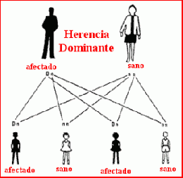

Las enfermedades hereditarias son aquel conjunto de enfermedades genéticas cuya característica principal es su supervivencia de generación en generación, transmitiéndose de padres a hijos y así sucesivamente (en un determinado momento del tiempo, algo hace cambiar la genética, y ese algo sobrevive en los genes, las mismas circunstancias que hicieron cambiar la genética en un determinado tiempo, pueden volver a suceder en otro momento del tiempo, así que la herencia genética, es la herencia de la humanidad).
